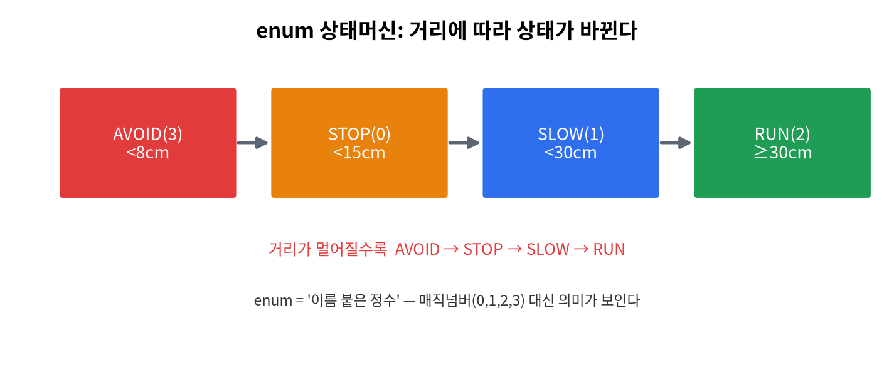
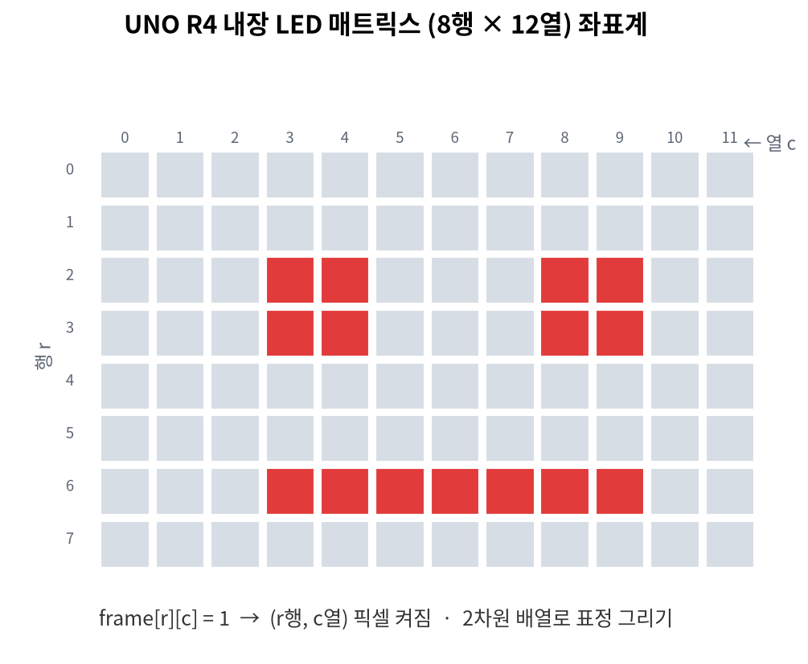

5주차 · 조건문 (if / switch) + LED 표정¶
C언어 · 미래모빌리티학과 | CLO1·CLO3 | 교재 Ch06


학습 목표¶
if/else if/else, 중첩 조건,switch-case, 삼항 연산자를 사용한다.- 거리에 따른 정지/감속/주행 판단을 구현하고, LED 매트릭스 표정으로 표시한다.
1. 이론¶
1.1 if 문¶
조건은 0이면 거짓, 0이 아니면 참. 관계·논리 연산자와 함께 쓴다.1.2 거리 → 상태 판단 (모빌리티)¶
const char* decide_state(double cm) {
if (cm < 15.0) return "STOP";
else if (cm < 30.0) return "SLOW";
else return "RUN";
}
경계값 주의
< 15 와 <= 15는 다르다. 15.0이 STOP인지 SLOW인지 경계 조건을 분명히 하라.
1.3 switch 문¶
정수/문자 값이 여러 경우로 갈릴 때 깔끔하다.
switch (cmd) {
case 'h': faceHappy(); break; // break 없으면 다음 case로 흘러감(fall-through)
case 'a': faceAngry(); break;
default: faceNeutral(); // 어느 것도 아닐 때
}
1.4 삼항 연산자¶
1.5 LED 매트릭스 = 2차원 배열의 시각화¶
UNO R4의 12×8 LED는 frame[8][12] 배열. 1이면 켜짐 → 조건에 따라 다른 표정을 그린다(위 그림 참조).
2. 핵심 용어 정리¶
| 용어 | 설명 |
|---|---|
| 조건식 | 참/거짓을 만드는 식(0=거짓) |
| 분기(branch) | 조건에 따라 다른 코드 실행 |
| fall-through | switch에서 break 누락 시 다음 case로 흐름 |
default |
switch의 "그 외 모든 경우" |
| 삼항 연산자 | 조건 ? A : B |
3. 실습¶
실습 5-1 · 거리 판단 (예제 ex03_obstacle.c)¶
거리 배열을 받아 각 값에 대해 STOP/SLOW/RUN 출력.
한 단계 더:
enum으로 상태에 이름을 붙인 상태머신 버전ex11_state_enum.c(STOP/SLOW/RUN/AVOID). 매직 넘버 대신 이름을 쓰면 코드가 읽기 쉬워진다.
실습 5-2 · 학점 변환(switch)¶
score/10으로 A/B/C/F 분기. 100점(=10) 처리 주의(연습 3-1).
실습 5-3 · 아두이노 LED 표정¶
// 거리(가상)에 따라 다른 표정 출력 (code/arduino/05_showface)
if (dist < 15) showFace('o'); // 놀람
else if (dist < 30) showFace('a'); // 화남
else showFace('h'); // 웃음
4. 과제¶
- 학점 변환 switch, 아두이노 거리별 LED 표정.
5. 참조¶
- 교재 Ch06 · 자료
code/arduino/05_showface· 그림img/07_led_matrix_coord.png
형성평가 체크포인트¶
- if/switch 선택 기준 · [ ] 경계값 처리 · [ ] LED 표정 출력 · [ ] fall-through 이해
연습문제¶
decide_state(20.0)의 반환값은? (STOP<15, SLOW<30, RUN)switch에서case끝에break를 빠뜨리면 어떤 일이 일어나는가?int s = (dist < 15) ? 0 : 25;에서dist=10이면s는?
정답 및 해설
"SLOW"— 15 ≤ 20 < 30.- fall-through — 다음
case의 코드까지 이어서 실행된다. 0— 조건이 참이므로?다음 값.